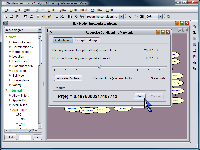
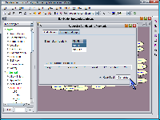

SamIam’s RC Tool can compute the probability of evidence, "Pr(e)" for a Bayesian network, while allowing the user to decide how much computer memory he can spare for the computation. The tool provides an estimate of the time required to finish the computation given a certain memory allocation, and lets the user fine-tune the data structures it uses to perform the computation.
Recursive Conditioning, RC, is an any-space algorithm for exact inference in Bayesian networks. It is driven by a structure known as a dtree, which recursively decomposes a network into two smaller subnetworks until the subnetworks only consist of a single CPT. The RC algorithm can then solve each subnetwork independently and merge the localized results together to calculate the desired probability. Many different dtrees exist for a network, and the way the network is decomposed dramatically affects the resource requirements. Therefore, Samiam allows the user to experiment with different dtrees by choosing the elimination order heuristic SamIam uses as the initial step in creating the dtree. For more information on recursive conditioning, see the paper "Recursive Conditioning" by Darwiche in Artificial Intelligence Journal.
When RC is recursively solving the networks, it necessarily solves many of the decomposed networks multiple times for the same value. This leads to the any-space behavior, since it can use any amount of space to cache these values and look them up instead of recomputing them. In fact, the exact number of times each of these caches is looked up can easily be computed as seen in the paper by Darwiche titled "Any-Space Probabilistic Inference" in Proceedings of UAI-2000. Therefore, space can easily be traded for time depending on how much memory the user allocates to RC for its caching.
The first step in using the Recursive Conditioning tool is to open a Bayesian network file and to set the desired evidence on the variables in the network. Next, choose the Recursive Conditioning menu item from the Tools menu. When it opens, the Recursive Conditioning window presents you with a number for the amount of memory it requires to run a Pr(e) computation in optimal time. Use the slider bar to adjust what fraction of that optimal memory you would like to devote to the computation. Next, click the "Allocate Caches" button. The Recursive Conditioning tool will begin creating the data structures it needs to compute Pr(e), which it progressively refines. During this process, it provides an estimate of the running time. Next, click the "Run" button in the results section of the Recursive Conditioning tool window. When the computation finishes, the answer will appear in the results section of the window, and SamIam replaces the estimated time number above with the elapsed time for the completed computation.
|
 |
To refine the Dtree SamIam uses as a basis for recursive conditioning computations, select the "Dgraph Settings" tab of the Recursive Conditioning tool window. In this tab, the user can generate the Dtree based on an elimination order. You can choose the heuristic SamIam uses to generate the elimination order: "minimum fill" and "minimum size." Once you have selected the desirable heuristic, select the check box labeled "Keep Best" if you would like SamIam to keep the most computationally feasible Dtree as you generate a series of them, or deselect it if you would like to always keep the last Dtree you generate. Next, click the "Generate" button. SamIam will generate a new Dtree. SamIam will keep the new Dtree if either the "Keep Best" check box is deselected or if the new Dtree is superior to the previous Dtree for the purposes of recursive conditioning computations. If SamIam keeps the new Dtree for either of these reasons, it will update the "Current Dgraph Properties" section of the Dtree Settings tab. Once you have generated an acceptable Dtree, switch back to the "Calculation" tab and run a recursive conditioning computation as above.
|
 |